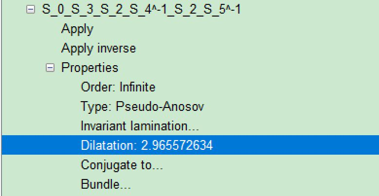
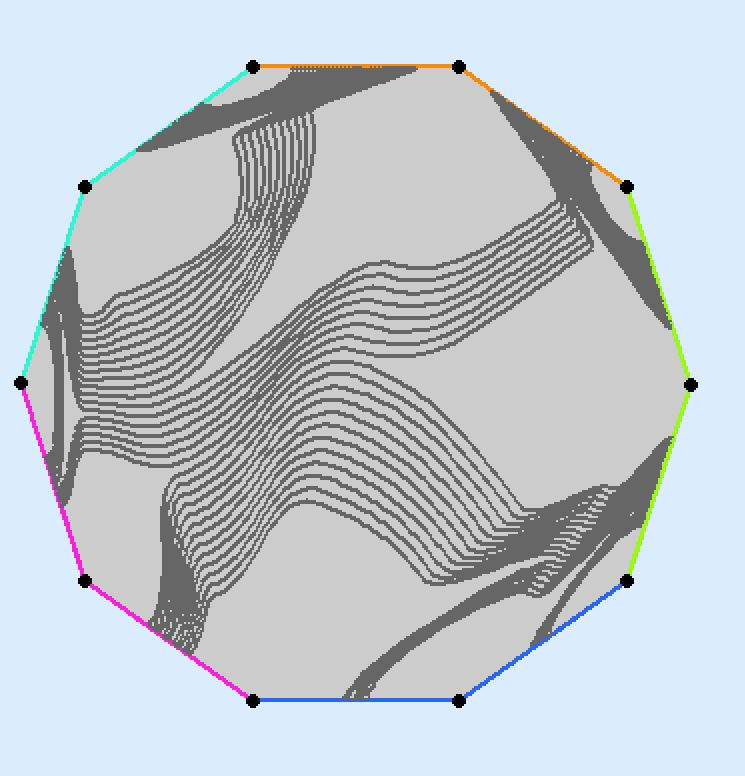
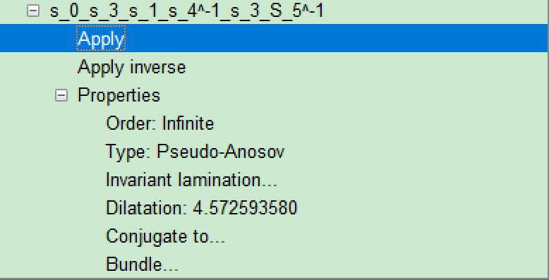
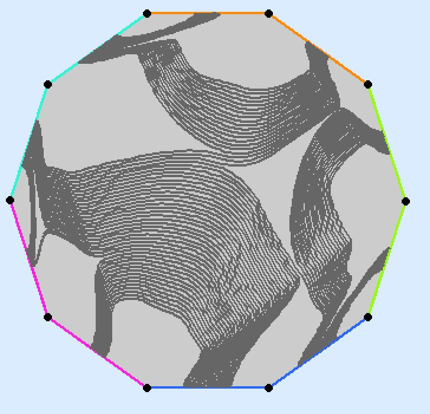
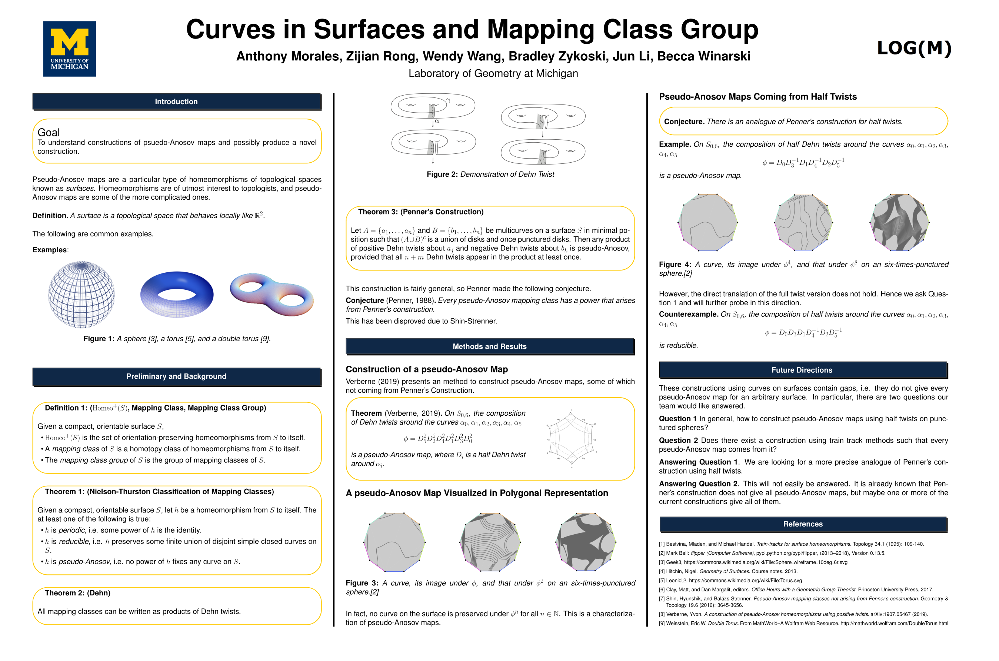

Faculty advisors: Jun Li and Becca Winarski
Grad student mentor: Bradley Zykoski
Undergraduate researchers: Anthony Morales, Zijian Rong, Wendy Wang
Project description: The main goal of the project is to understand the construction of
mapping classes of surfaces coming
from curves, provide visualization, and produce new constructions.
We will begin with reviewing the geometry and topology of surfaces,
and learn some basic properties (include the important Nielson-Thurston classification and pseudo-Anosov maps) of mapping
class group,
which describes the symmetry of the surfaces. We will also study how to construct the elements of the latter from the former.
Questions we are going to explore are:
1. What kinds of important structures (we'll focus on lamination and train tracks) about curves are used in the geometry/topology of surface, and why are they interesting? We'll learn some of Thurston's seminal work.
2. What's interesting and significant about pseudo-Anosov maps? What do we know about the important invariants (dilatation)?
The above two questions are well answered in the team's midterm presentation, here's the slides.
3. What are the existing constructions using structures in Question 1 to construct pseudo-Anosov maps in Question 2, and how to visualize them? In particular, we'll focus on Penner's construction.
The above question 3 is well answered in the team's final poster, we provide computer implement of two very recent papers in Python (Flipper).
4. It was recently shown that Penner's construction does not cover all pseudo-Anosov maps.
We will learn about what's known about pseudo-Anosov maps that are not coming from Penner's construction.
An interesting open problem is to find new constructions for these maps using laminations and train tracks.
This is still open, however, with the help of previous computer implement(Python), we had some new candidate for sphere braid groups that possibly are not of Penner type.
Our constructions uses only half twists, which (to our best knowledge) has not appeared in literature before. Here's the polygon reprensentation of the 6 punctured sphere, several such
examples (with computer visualized laminations) and computation of dilatation.
|  |  |  |  |
|  |
{kind=link}